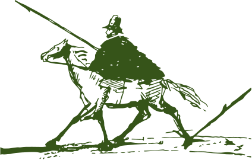

3 часа по скоростной трассе занимает сейчас дорога от Москвы до Старицы, в то время как Пушкин добирался двое суток

Объекты
Дом купца Филиппова
Два дома по ул. Пушкина
Бывшая швейная фабрика
Компания «Новый город» начала процесс приспособления под современное использование старинных зданий в Старице, имеющих статус памятников культурного наследия регионального значения.
Дом купца Филиппова
Два дома по ул. Пушкина
Бывшая швейная фабрика
Маркетинг территории
Чтобы создать здесь туристический магнит федерального значения, компания «Новый город» занимается территориальным маркетингом — Старица должна занять достойное место на туристической карте России. В планах на ближайшие годы:
В конце сентября в Старице начинают работать студенты факультета дизайна среды Высшей школы экономики (ВШЭ). В качестве темы дипломной работы группа...
Вышла большая статья в газете «Ведомости», посвященная новой жизни Старицы и ее ключевом меценате — экс-вице-премьере России, общественном деятеле Викторе Христенко...
В конце сентября в Старице начинают работать студенты факультета дизайна среды Высшей школы экономики (ВШЭ). В качестве темы дипломной работы группа...